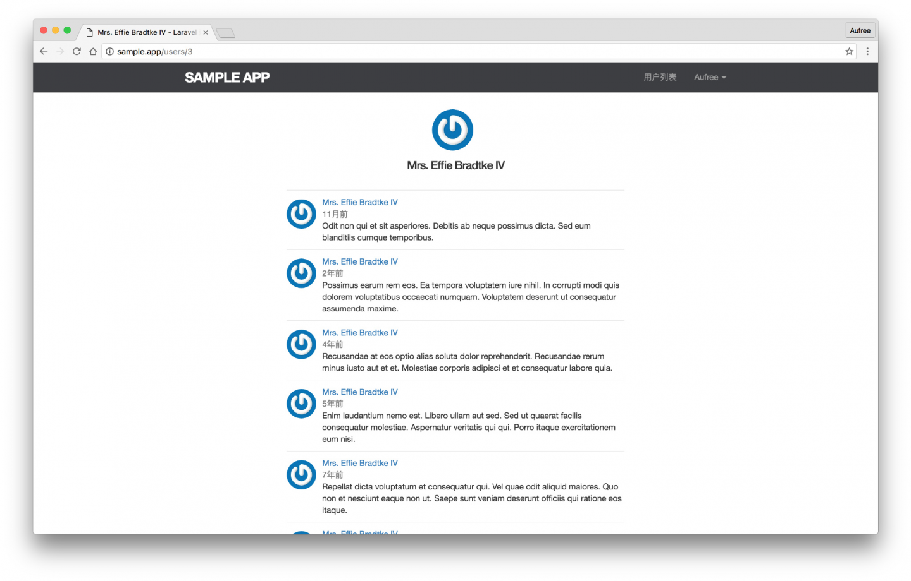

10.3. 显示微博
显示微博
本节我们将为用户个人页面添加微博展示列表，用于显示该用户发布过的所有微博动态。
获取微博
首先我们需要在用户控制器的 show 动作中取出该用户发布过的所有微博。由于我们之前进行了模型关联，因此取出一个用户的所有微博可以通过以下方式：
$statuses = $user->statuses();在我们将用户的所有微博取出之后，还需要根据微博的创建时间 created_at 对微博进行排序，让新创建的微博靠前显示。我们使用 Eloquent 模型提供的 orderBy 方法，通过指定字段名和排序方式来对微博进行排序。
$statuses = $user->statuses()->orderBy('created_at', 'desc');desc 是英文 descending 的简写，意为倒序，也就是数字大的排靠前。
最后，由于用户的微博发布数量可能会非常多，因此我们对取出的微博数据进行分页，在每个页面最多只显示 30 条微博：
$statuses = $user->statuses()->orderBy('created_at', 'desc')->paginate(30);现在，相信你已经知道如何为用户控制器的 show 动作添加微博动态的读取逻辑了。不过我们还是需要来看下具体实现代码。
app/Http/Controllers/UsersController.php
<?php
namespace App\Http\Controllers;
.
.
.
class UsersController extends Controller
{
.
.
.
public function show(User $user)
{
$statuses = $user->statuses()
->orderBy('created_at', 'desc')
->paginate(30);
return view('users.show', compact('user', 'statuses'));
}
.
.
.
}compact 方法可以同时接收多个参数，在上面代码我们将用户数据 $user 和微博动态数据 $statuses 同时传递给用户个人页面的视图上。
渲染微博
接下来我们来构建单条微博的局部视图，该局部视图最终将应用在用户的个人页面上。
微博的局部视图包含一条微博动态的发布者，发布内容以及发布日期等信息。其基本页面结构如下：
resources/views/statuses/_status.blade.php
<li id="status-{{ $status->id }}">
<a href="{{ route('users.show', $user->id )}}">
<img src="{{ $user->gravatar() }}" alt="{{ $user->name }}" class="gravatar"/>
</a>
<span class="user">
<a href="{{ route('users.show', $user->id )}}">{{ $user->name }}</a>
</span>
<span class="timestamp">
{{ $status->created_at->diffForHumans() }}
</span>
<span class="content">{{ $status->content }}</span>
</li>$status 实例代表的是单条微博的数据，$user 实例代表的是该微博发布者的数据。另外你可能还会注意到下面这个方法：
$status->created_at->diffForHumans()该方法的作用是将日期进行友好化处理，我们可以使用 tinker 来查看该方法的具体输出情况。
$ php artisan tinker在 tinker 中输出第一位用户的创建时间如下。
>>> $created_at = App\Models\User::first()->created_at
=> Carbon\Carbon {#704
+"date": "1998-12-06 03:15:31.000000",
+"timezone_type": 3,
+"timezone": "UTC",
}在 tinker 中调用 diffForHumans 方法来输出，结果如下。
>>> $created_at->diffForHumans()
=> "17 years ago"我们发现 diffForHumans 为我们生成的时间是英文的，如果要使用中文时间，则需要对 Carbon 进行本地化设置。Carbon 是 PHP DateTime 的一个简单扩展，Laravel 将其默认集成到了框架中。对 Carbon 进行本地化的设置很简单，只在 AppServiceProvider 中调用 Carbon 的 setLocale 方法即可，AppServiceProvider 是框架的核心，在 Laravel 启动时，会最先加载该文件。
app/Providers/AppServiceProvider.php
<?php
namespace App\Providers;
use Illuminate\Support\ServiceProvider;
use Carbon\Carbon;
class AppServiceProvider extends ServiceProvider
{
/**
* Bootstrap any application services.
*
* @return void
*/
public function boot()
{
Carbon::setLocale('zh');
}
/**
* Register any application services.
*
* @return void
*/
public function register()
{
//
}
}现在，让我们重启 tinker：
$ php artisan tinker可以看到输出的日期将变成中文。
>>> $created_at = App\Models\User::first()->created_at
>>> $created_at->diffForHumans()
=> "17年前"现在，我们可以在用户的个人页面使用该局部视图和渲染微博的分页链接了。
resources/views/users/show.blade.php
@extends('layouts.default')
@section('title', $user->name)
@section('content')
<div class="row">
<div class="col-md-offset-2 col-md-8">
<div class="col-md-12">
<div class="col-md-offset-2 col-md-8">
<section class="user_info">
@include('shared._user_info', ['user' => $user])
</section>
</div>
</div>
<div class="col-md-12">
@if (count($statuses) > 0)
<ol class="statuses">
@foreach ($statuses as $status)
@include('statuses._status')
@endforeach
</ol>
{!! $statuses->render() !!}
@endif
</div>
</div>
</div>
@stop在个人页面视图中，我们使用了 count($statuses) 方法来判断当前页面是否存在微博动态，如果不存在则不对微博的局部视图和分页链接进行渲染。现在视图已经构建完成，让我们针对用户微博的显示进行样式优化。
resources/assets/sass/app.scss
.
.
.
/* statuses */
.statuses {
list-style: none;
padding: 0;
margin-top: 20px;
li {
padding: 10px 0;
border-top: 1px solid #e8e8e8;
position: relative;
}
.user {
margin-top: 5em;
padding-top: 0;
}
.content {
display: block;
margin-left: 60px;
word-break: break-word;
img {
display: block;
padding: 5px 0;
}
}
.timestamp {
color: $gray-light;
display: block;
margin-left: 60px;
}
.gravatar {
margin-right: 10px;
margin-top: 5px;
}
form {
button.status-delete-btn {
position: absolute;
right: 0;
top: 10px;
}
}
}
aside {
textarea {
height: 100px;
margin-bottom: 5px;
}
}
.status_form {
margin-top: 20px;
}示例微博
现在我们的用户还没有办法发布任何微博，因为我们的微博发布表单还未构建，但通过前面章节的学习，我们知道可以使用 Laravel 提供的数据填充功能来为应用生成测试数据。
首先我们需要为「微博模型」定义好用来生成的假数据的「模型工厂」。我们可以利用 Laravel 命令 make:factory 来生成工厂类文件：
$ php artisan make:factory StatusFactory内容填入：
database/factories/StatusFactory.php
<?php
use Faker\Generator as Faker;
$factory->define(App\Models\Status::class, function (Faker $faker) {
$date_time = $faker->date . ' ' . $faker->time;
return [
'content' => $faker->text(),
'created_at' => $date_time,
'updated_at' => $date_time,
];
});接着创建一个 StatusesTableSeeder 文件来对微博假数据进行批量生成。
$ php artisan make:seeder StatusesTableSeeder我们不需要为每个用户都生成大量微博，为了测试方便且提高假数据的生成速度，我们只为前三个用户生成共 100 条微博假数据。
database/seeds/StatusesTableSeeder.php
<?php
use Illuminate\Database\Seeder;
use App\Models\User;
use App\Models\Status;
class StatusesTableSeeder extends Seeder
{
/**
* Run the database seeds.
*
* @return void
*/
public function run()
{
$user_ids = ['1','2','3'];
$faker = app(Faker\Generator::class);
$statuses = factory(Status::class)->times(100)->make()->each(function ($status) use ($faker, $user_ids) {
$status->user_id = $faker->randomElement($user_ids);
});
Status::insert($statuses->toArray());
}
}我们通过 app() 方法来获取一个 Faker 容器 的实例，并借助 randomElement 方法来取出用户 id 数组中的任意一个元素并赋值给微博的 user_id，使得每个用户都拥有不同数量的微博。
接下来我们需要在 DatabaseSeeder 类中指定调用微博数据填充文件。
database/seeds/DatabaseSeeder.php
<?php
use Illuminate\Database\Seeder;
use Illuminate\Database\Eloquent\Model;
class DatabaseSeeder extends Seeder
{
/**
* Run the database seeds.
*
* @return void
*/
public function run()
{
Model::unguard();
$this->call(UsersTableSeeder::class);
$this->call(StatusesTableSeeder::class);
Model::reguard();
}
}最后让我们对数据库进行重置和填充。
$ php artisan migrate:refresh --seed现在任意访问前三个用户的个人页面，可以看到微博数据已成功生成。
